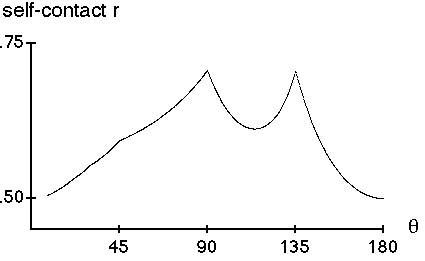

This graph shows the self-contacting r as a function of q.
|  |
The angles q = 90 and q = 135 can be viewed as critical angles: here both the tree and the set of branch tips form a filled-in rectangle (q = 90) and filled in triangle (q = 135).
These angles alone give the maximum value, 2, for the dimension of the tree.
As the angle approaches, achieves, and passes these two special values, the branching geometry undergoes a topological phase transition.
These phase transitions are illustrated by the animations.
Return to Self-Contacting Trees.